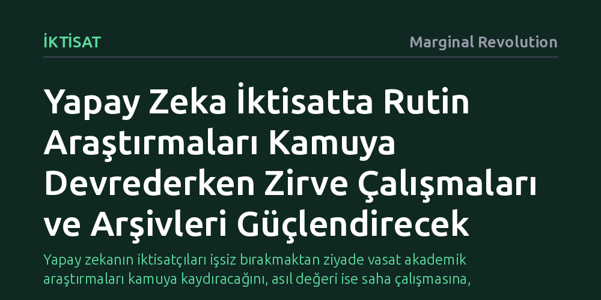

IKTISAT · Marginal Revolution · 2026-10-09
Yapay zeka, iktisatta rutin veri analizine dayalı sıradan araştırmaları akademiden kamu kurumlarına devrederken, üst düzey saha çalışmalarını ve tarihsel arşiv taramalarını güçlendirecek. Ayrıca makale gönderim aşamasında kod ve verinin eş zamanlı denetlendiği eksiksiz bir doğrulama standardı getirecek.
Yapay zekanın iktisatçıları işsiz bırakmaktan ziyade vasat akademik araştırmaları kamuya kaydıracağını, asıl değeri ise saha çalışmasına, tarihsel arşivlere ve anlık veri denetimine vereceğini gösteriyor.

Yapay zekanın iktisat bilimine ve akademik araştırmalara etkisi, mesleğin toptan ortadan kalkmasından ziyade araştırmacılar arasında keskin bir kutuplaşma yaratmaya hazırlanıyor. Bir tarafta en üst düzey, özgün ve insan liderliğindeki araştırmalar yapay zekanın sunduğu ölçek gücüyle çok daha nitelikli hale gelirken, diğer tarafta mekanik veri analizine dayanan standart çalışmalar varlık zeminini kaybediyor.
Zirvedeki araştırmacılar için yapay zeka bir ikame değil, kapasiteyi katlayan devasa bir kaldıraç işlevi görecek. İlgili kitlelerle niteliksel mülakatlar yürütmek, sahada karmaşık davranışsal müdahaleler kurgulamak veya devasa metin verilerini anlamlandırmak gibi emek-yoğun süreçler yapay zeka desteğiyle hızlanacak. Ancak bu süreçlerin merkezinde ve yönlendirici koltuğunda yine insan araştırmacı bulunacak.
Akademik iktisadın bugüne kadar omurgasını oluşturan ve araştırmacıların kariyerlerini inşa ettiği rutin çalışmalar büyük bir sarsıntıyla karşı karşıya. Kamuya açık veri setlerini indirip standart ekonometrik modeller çalıştırmak, temel anket deneyleri tasarlamak ya da bilindik teorik modeller türetmek gibi işler artık neredeyse tamamen yapay zekaya devredilebilir durumda.
Bu gelişme, akademik varlığını yazarın deyimiyle bu tip “ekmek teknesi” niteliğindeki şablon çalışmalara borçlu olan araştırmacılar açısından oldukça sarsıcı olacak. Ne var ki bu tür analizler tümüyle yok olmayacak; nitelik değiştirerek doğrudan kamu kurumlarına kayacak. Politika yapıcılar, kendi sorularının yanıtını almak için artık uzun hakem süreçlerinden geçen akademik makaleleri beklemek yerine, yapay zeka araçlarıyla bu araştırmaları kendi bünyelerinde doğrudan yürütebilecek.
Yapay zeka çağında iktisat disiplininin en dinamik ve hızlı sıçrama yapan alanlarından birinin iktisat tarihi olması bekleniyor. Geçmişin fiziksel ve dağınık arşivlerinin sayısallaştırılması konusunda küresel bir yarış başlayacak ve bu alana yönelik ciddi teşvikler ortaya çıkacak.
Sayısallaştırılan devasa tarihsel kayıtlar, sadece geçmişe dönük yeni betimsel olguları gün yüzüne çıkarmakla kalmayacak; aynı zamanda araştırmacılara daha önce test edilmesi imkânsız olan nedensel hipotezler için yepyeni ampirik stratejiler geliştirme fırsatı sunacak. Böylece yapay zeka, iktisatçıları geçmişin somut verileriyle buluşturarak yeni keşiflerin kapısını aralayacak.
Yapay zekanın akademik dünyaya getireceği en somut kurumsal dönüşüm, makale değerlendirme ve doğrulama mekanizmalarında yaşanacak. Mevcut sistemde aylarca süren ve çoğu zaman sadece metnin biçimsel tutarlılığına odaklanan geleneksel hakemlik süreci, yapay zeka asistanları sayesinde baştan aşağı yenilenecek.
Bir makalenin dergiye sunulduğu ilk anda metnin, yazılım kodunun ve kullanılan verinin eş zamanlı olarak 360 derece denetimden geçirilmesi standart bir pratik haline gelecek. Bu denetim altyapısı, iktisat literatürünü uzun süredir meşgul eden tekrarlanabilirlik krizini hafifletirken, kusurlu veya manipülatif çalışmaların daha ilk aşamada ayıklanmasını sağlayacak.